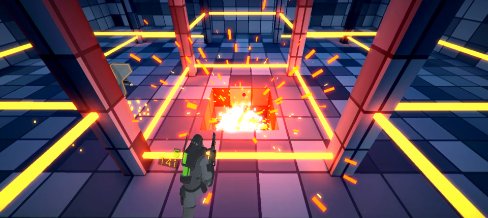
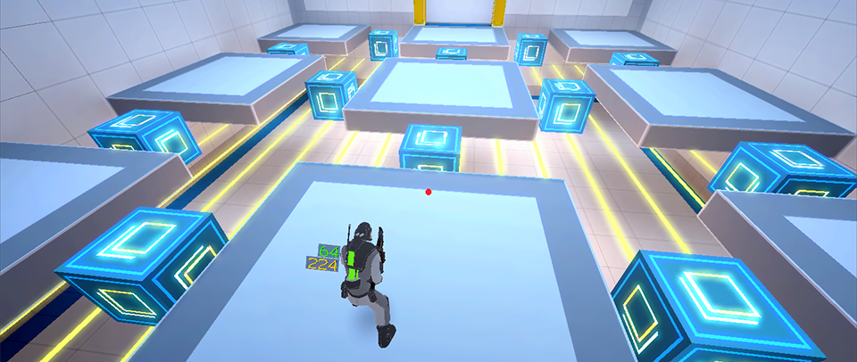
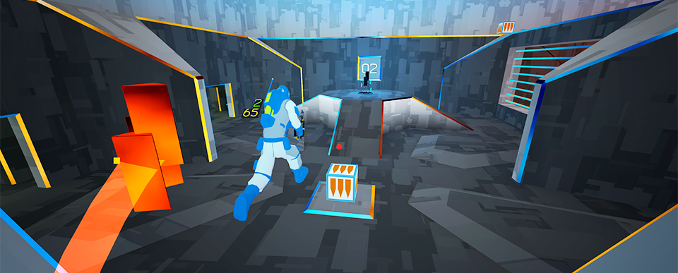
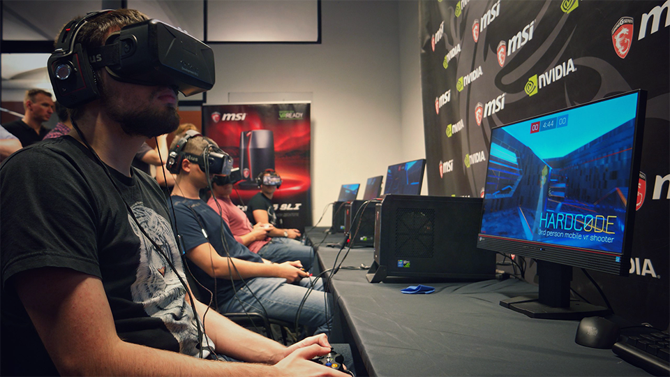
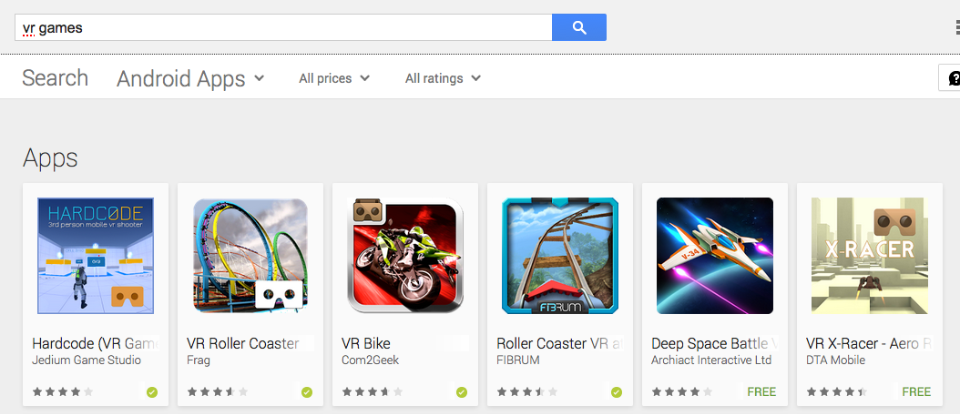

Общие сведения
HARDCODE VR: игра для мобильного VR на базе Google Cardboard и Gear VR.
Начало разработки: август 2015 г.
Публикация в Google Play: 19 октября 2015 г.
Количество установок: 172602 (на 17.09.2016)
Разработчик: Михаил Фарленков (fb, vk, tw)

Игровой процесс
HARDCODE - это очень динамичный шутер включающий в себя как однопользовательские миссии, в которых нужно уничтожать роботизированных противников, так и мультиплеерные режимы для сражений с другими игроками в онлайне.
Игра ориентирована на хардкорную аудиторию и требует использования геймпада, что позволяет получать игровой опыт "консольного" уровня на мобильных устройствах.

Вид от третьего лица
Одной из главных особенностей игры является то, что она реализована в режиме от третьего лица. На первый взгляд это противоречит самой идее виртуальной реальности, по которой мы должны сами погружаться в нее и лично быть участниками событий, а не наблюдать за своим персонажем со стороны.
Но данная идея красивая на словах в действительности упирается в несовершенство технологий, которые лежат в основе текущего поколения мобильного VR: динамичные игры с видом от первого лица вызывают очень сильные болезненные ощущения практически у всех игроков. Поэтому разработчикам игр приходится идти на различные компромиссы, в том числе в ущерб увлекательности игры.
Эксперименты над геймплеем с видом от третьего лица дали возможность создать игру с высокой динамикой и практически без компромиссов по дизайну.

Графика
Для игры был выбран максимально простой визуальный стиль и были написаны максимально дешевые кастомные шейдеры, что позволило достичь достаточно высокой производительности на большинстве устройств и тем самым расширить аудиторию игры.
Со временем по ходу развития рынка мобильного VR и ростом производительности мобильных устройств графика будет модернизирована. Так же для турниров, которые часто проводятся с использованием Oculus Rift есть созданы отдельные карты с графикой десктопного уровня.

Киберспортивные турниры
Благодаря развитой core-механике и стабильному сетевому режиму игры, HARDCODE привлекает внимание организаторов киберспортивных мероприятий. Так в 2016-ом году мы провели несколько турниров совместно с компаниями Microsoft и MSI. Ближайший турнир запланирован на 29 сентября и пройдет в рамках крупнейшей выставки интерактивных развлечений Игромир 2016.

Продвижение
HARDCODE стабильно держится в топе поиска в Google Play по запросу "vr games". При этом никакой специальной активности по ее продвижению не проводится и весь рост аудитории можно считать органическим.
HARDCODE регулярно попадает в различные сборники "Top X games for VR" и т.п. Все больше пользователей публикуют видео-обзоры на нее. Иногда игру упоминают на страницах продажи VR-очков и геймпадов для Android. Так же пользователи рекомендуют ее друг другу на форумах и т.п.
Недавно от Google пришло уведомление о грядущем фитчеринге HARDCODE на Google Play. Ждемс :)
Трейлер игры
Видео с турнира: DevCon 2016
Видео с турнира: AR/VR GameDev Moscow
Скриншоты мультиплеера